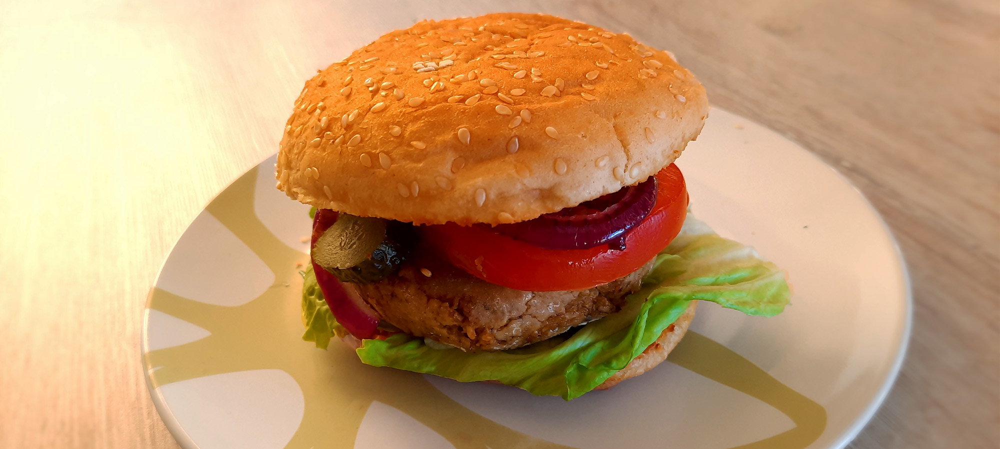

italiaanse caponata

geroosterde aubergine

marokkaanse tajine

japanse beef teriyaki

koreaanse bibimbap

biet wellington

avocado salade

amerikaanse caesar salade

chili sin carne met guacamole

salade met gegrilde ananas

falafelwrap

couscousbowl
biefstuk chimichurri & gegrilde groenten

bieten carpaccio

griekse vega gyros wraps

veganburger

Bereidingsduur: 60 minuten
Aantal personen: 5
Ingrediënten:
100 gram sojabrokken
1 aubergine
100 gram champignons
2 uien
2 tomaten
0,25 stuk komkommer
enkele blaadjes sla
3 augurken
naar smaak ketchup
naar smaak (vegan) mayo
5 hamburgerbroodjes
1 blokje groentebouillon
1 theelepel gerookt paprikapoeder
3 eetlepels chipotlesaus
1 theelepel knoflookpoeder
bloem
100 gram sojabrokken
1 aubergine
100 gram champignons
2 uien
2 tomaten
0,25 stuk komkommer
enkele blaadjes sla
3 augurken
naar smaak ketchup
naar smaak (vegan) mayo
5 hamburgerbroodjes
1 blokje groentebouillon
1 theelepel gerookt paprikapoeder
3 eetlepels chipotlesaus
1 theelepel knoflookpoeder
bloem
Instructies:
1. Kook 250 milliliter water en meng dit met het bouillonblokje. Giet dit in een kom en voeg de sojabrokken toe en roer dit even door.
2. Snijd ondertussen de aubergine, 1 ui en champignons in kleine stukjes en bak dit kort in een pan en voeg ook de kruiden en de chipotlesaus toe.
3. Giet de sojabrokken af en voeg deze toe aan het mengsel. Pureer dit, voeg bloem toe en vorm er met je handen burgers van. Voeg wat extra bloem toe zodat het mengsel niet uit elkaar valt. Leg de hamburgermengsels een kwartiertje in de koelkast.
4. Snijd ondertussen de tomaten, komkommer en augurk in plakjes. Snijd de andere ui in ringen en karamelliseer deze.
5. Neem een pan en bak hierin de broodjes kort zodat deze lekker knapperig zijn van binnen.
6. Bak in een grillpan totdat de burgers bruin zijn. Beleg de broodjes met de burger, sla, de plakjes groente en wat ketchup of mayo.
1. Kook 250 milliliter water en meng dit met het bouillonblokje. Giet dit in een kom en voeg de sojabrokken toe en roer dit even door.
2. Snijd ondertussen de aubergine, 1 ui en champignons in kleine stukjes en bak dit kort in een pan en voeg ook de kruiden en de chipotlesaus toe.
3. Giet de sojabrokken af en voeg deze toe aan het mengsel. Pureer dit, voeg bloem toe en vorm er met je handen burgers van. Voeg wat extra bloem toe zodat het mengsel niet uit elkaar valt. Leg de hamburgermengsels een kwartiertje in de koelkast.
4. Snijd ondertussen de tomaten, komkommer en augurk in plakjes. Snijd de andere ui in ringen en karamelliseer deze.
5. Neem een pan en bak hierin de broodjes kort zodat deze lekker knapperig zijn van binnen.
6. Bak in een grillpan totdat de burgers bruin zijn. Beleg de broodjes met de burger, sla, de plakjes groente en wat ketchup of mayo.